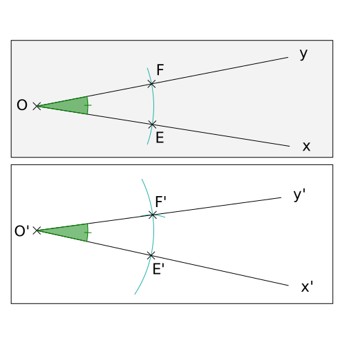
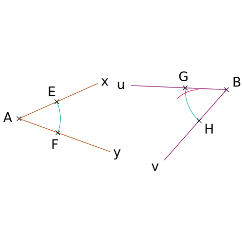
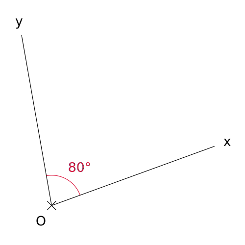
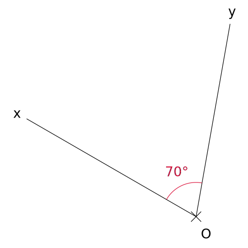
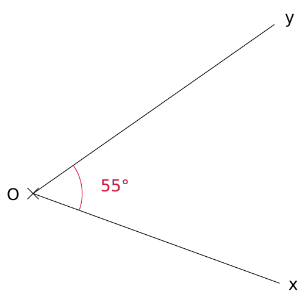
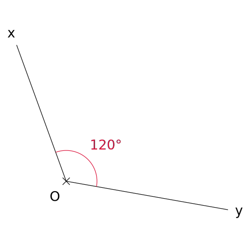

Construction animées avec InstrumEnPoche
Accueil
Droites
Triangles
Quadrilatères
Angles
Transformations
Divers

Reproduire un angle
Reproduire un angle à l'aide du compas et d'une règle non graduée.

Comparer deux angles
Comparer deux angles à l'aide du compas.

Mesurer un angle
Mesurer un angle à l'aide d'un rapporteur.

Mesurer un angle
Mesurer un angle à l'aide d'un rapporteur.

Construire un angle
Construire un angle à l'aide d'un rapporteur.

Construire un angle
Construire un angle à l'aide d'un rapporteur.